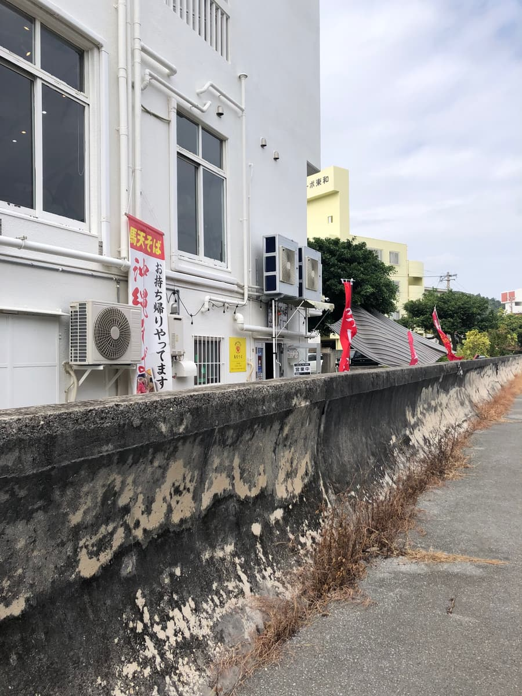
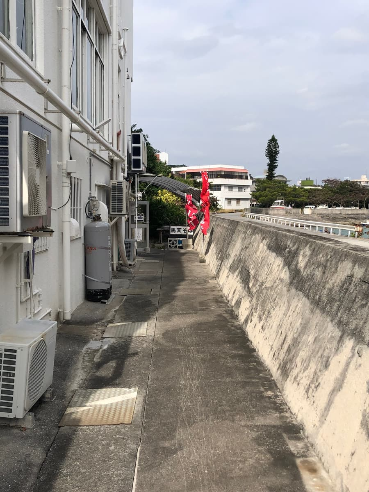
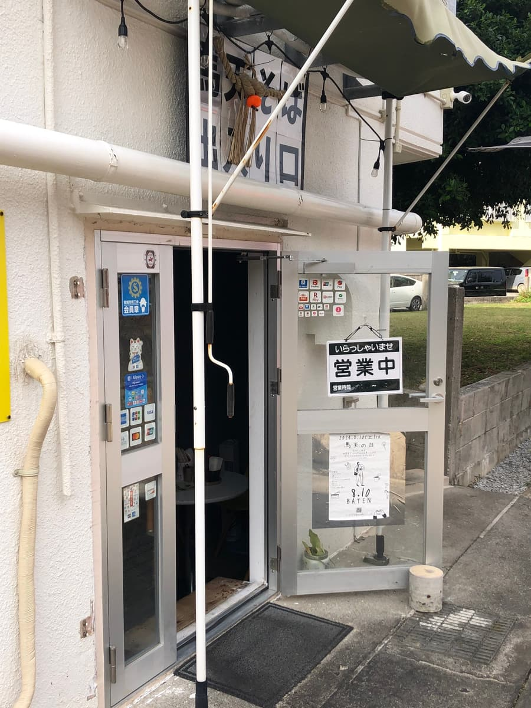
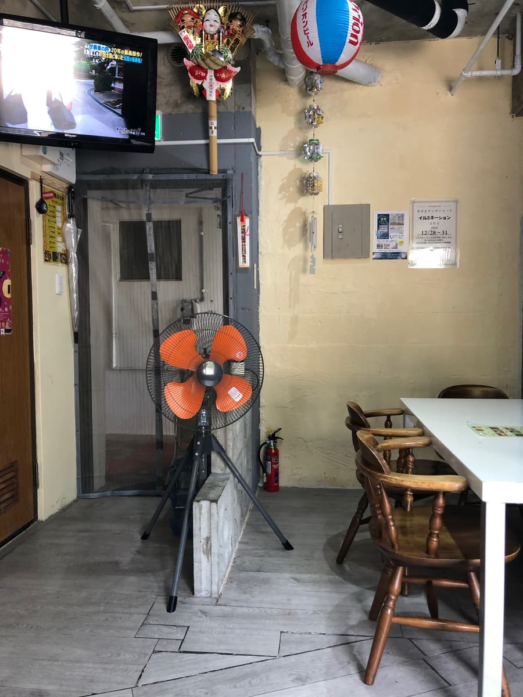
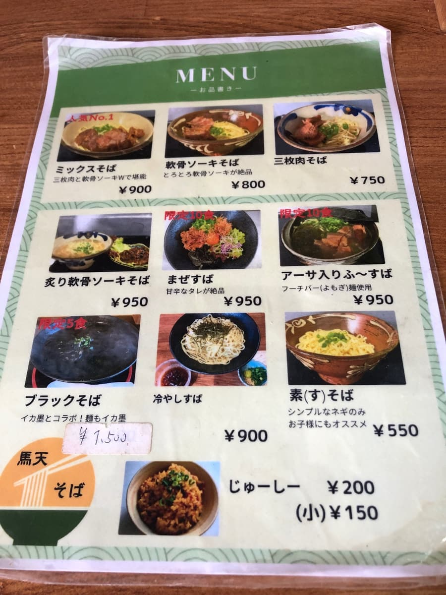
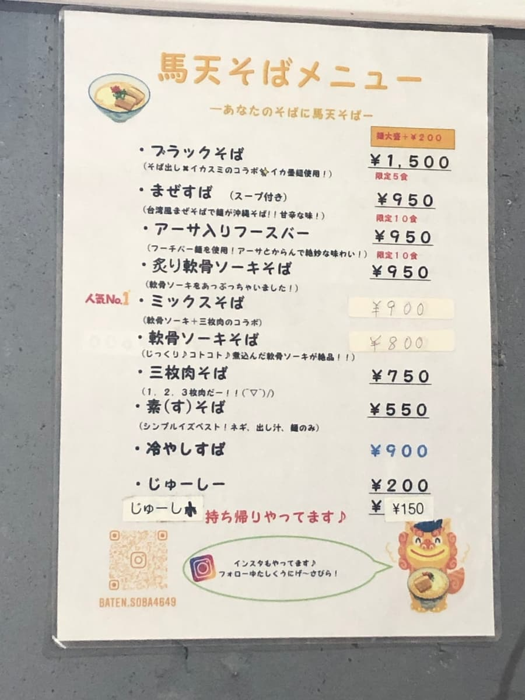
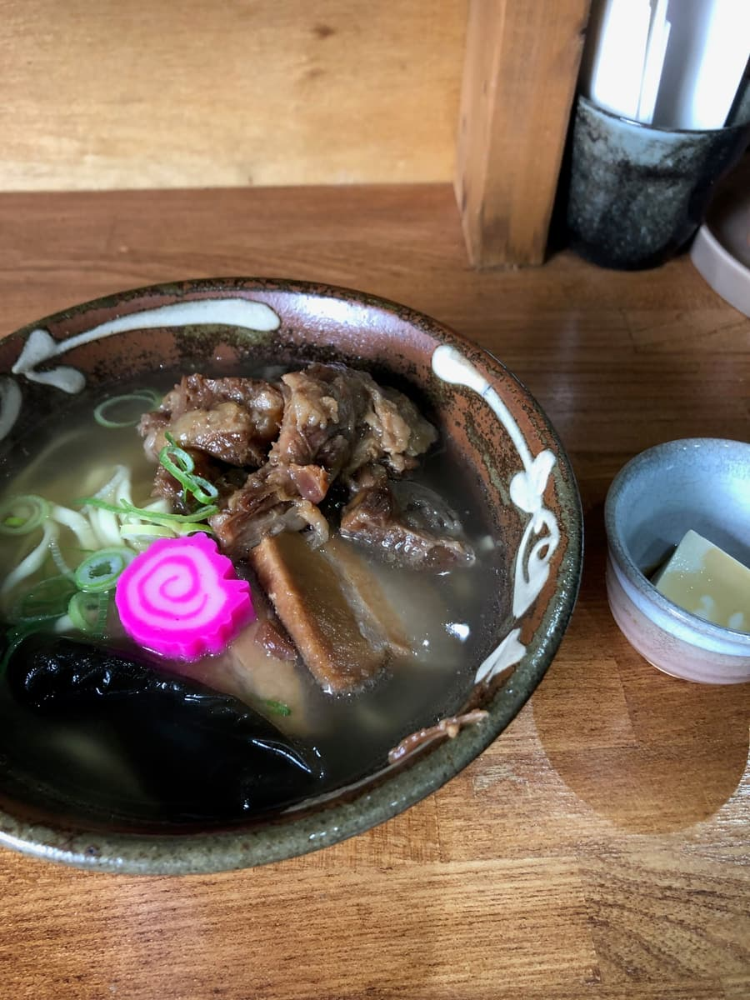
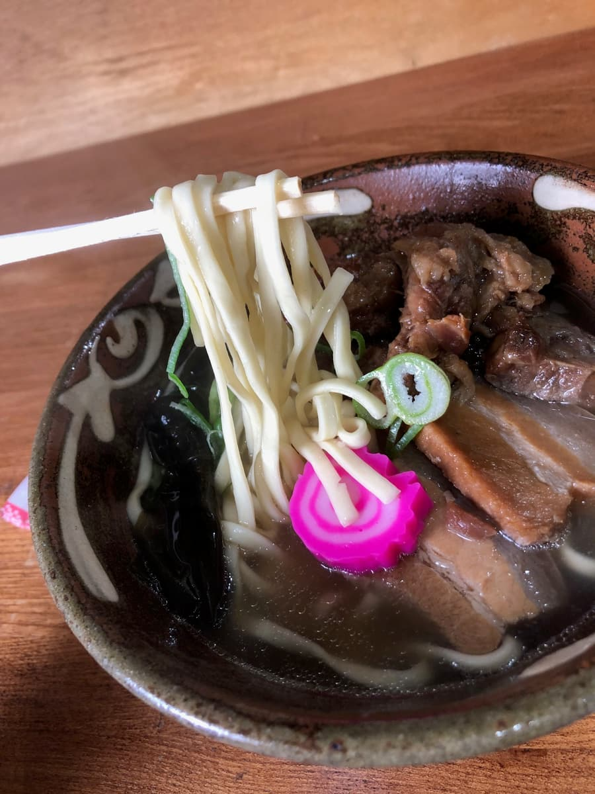

* This article was created by Claude Sonnet 4 AI and partly supplemented by me.
I ate here in December 2024 😄 On the way home from our usual weekend post-surf trip, wanting New Year's Eve soba, I went to "Batten Soba" in Sashiki Shinkai, Nanjo City!


Actually, when I ate at Tebichi no Tesuke last time, I spotted this shop's sign and had been curious ever since. This time I went to eat the "Mix Soba," recommended as the No. 1 favorite at "Batten Soba" in Sashiki Shinkai, Nanjo City, which I found when I ate at Tebichi no Tesuke the other day 😆
First, the location of this shop is quite interesting. It quietly sits on the first floor of a white building along a river, but the entrance is a bit unusual, and it's hard to find unless you're a local 😅
From the outside you'd think "Huh, is this a shop?" It gave the impression of a true hidden-gem Okinawa soba shop known only to those in the know. If the red flag hadn't been fluttering, I'd definitely have driven right past it. But shops like this, rooted in the local community, are surprisingly often delicious ✨ Still, the entrance inside the shop is so distinctive that you can't find it unless you're a local customer 😆


Once inside, a more substantial menu than I expected was ready, and it has a great variety too 😋


Starting with the "Mix Soba" labeled as the No. 1 favorite, the lineup is quite varied, with soft-bone pork rib soba (nankotsu soki soba), braised pork belly soba (sanmai-niku soba), mazesoba, fu-suba with sea lettuce (āsa), black soba, and more. Prices are reasonable at ¥750 to ¥950, and the fact that you can also take out jushi (Okinawan seasoned rice) is a nice point! This time I decided to order the No. 1 favorite "Mix Soba" (¥900) recommended by the staff member. Being able to enjoy both braised pork belly and soft-bone pork ribs is a real luxury, isn't it? 🤤
The shop isn't very large, but the homey, warm atmosphere is really nice 😊 Wooden tables and chairs are arranged, giving a nostalgic feeling like an old Okinawan diner. Various decorations and masks are displayed on the walls, so it's fun just to look around. The paper lanterns hanging from the ceiling add a nice touch too, and there was an atmosphere that reminded me of a festival stall. An electric fan spins round and round, a scene that's so very Okinawan, isn't it?

After ordering and waiting a while, the "Mix Soba" finally appeared! 😆 First, the visual impact is amazing. Chunks of braised pork belly and soft-bone pork ribs are piled in, and the fish cake and green onions are generously topped as well. The pink fish cake adds color, and it looks delicious just to look at ✨ The soup has a gentle, translucent color, and the lovely aroma of the blended broth rises up. My expectations are rising!
Let's start with a sip of the soup 😋 Yes yes, this is a blended broth with a solid pork-bone flavor! It's ordinarily tasty. It gently soaked into my body, tired from the end of the year 😌

Next, I try the noodles. These are medium-thick straight noodles, boiled to a soft texture 👍 People who like firmer noodles might find them a little lacking. The flavor of the noodles themselves is simple and doesn't get in the way of the soup's taste.
And now, the long-awaited toppings! First, the braised pork belly. Wow, this has been simmered until it's meltingly tender 😍 The seasoning is fairly sweet, with a gentle soy-sauce-based flavor. The soft-bone pork ribs are meltingly tender in the same way. These are also sweetly seasoned, finished with a gentle, Okinawan-style flavor.
Overall, my impression is of an ordinarily delicious Okinawa soba 😊 It doesn't have any particularly memorable features, but its steady deliciousness makes it easy to see why it continues to be loved by locals. As New Year's Eve soba, this gentle flavor may have been just right. It was a soba that gave me a warm, cozy feeling, as if healing a year's worth of fatigue ✨ My impression was that it was just ordinarily good.
Still, the distinctiveness of the entrance was memorable 😅 I'm sure first-time visitors will definitely get lost. But maybe that's part of Batten Soba's charm too. It feels like a hidden-gem shop that only locals know, which somehow makes you feel special. If you drive out toward Nanjo City, please stop by once. You can enjoy the ocean view too, and I think you can spend a relaxing time 🌊
Rating (9/15): Batten Soba was a shop that serves homey Okinawa soba that isn't flashy but that you can eat with peace of mind. The soup, noodles, and toppings were all of an ordinarily delicious quality, and it's understandable why it continues to be loved by locals 😊 The entrance is hard to find, but I think it's a shop you can enjoy including that. When you want to eat Okinawa soba in Sashiki Shinkai, Nanjo City, please remember Batten Soba!
Noodles: ★★★☆☆（3）
Soup: ★★★☆☆（3）
Toppings: ★★★☆☆（3）